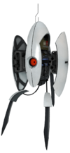
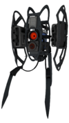
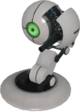
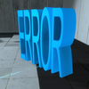
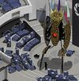
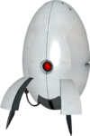

Turrets (Aperture-Geschütztürme)
Selbstständige, höfliche Wachroboter mit Laserzielerfassung
„Ziel erfasst. [...] Bist du noch da? [...] Ich nehme es dir nicht übel.“ — Standard-Geschützturm von Aperture Science
Überblick
Turrets (offiziell Aperture Science Sentry Turrets) sind dreibeinige, weiße Wachroboter mit einem einzelnen leuchtend roten Auge, die in Portal und Portal 2 als stationäre Hindernisse in vielen Testkammern eingesetzt werden.
Sobald ein Testsubjekt in das Sichtfeld ihres roten Laserstrahls gerät, klappen die beiden seitlichen Gehäuseflügel auf und zwei integrierte Maschinengewehre eröffnen sofort das Feuer.
Verhalten & Schwachstellen
Obwohl Geschütztürme auf kurze Distanz tödlich sind, haben sie mehrere entscheidende Konstruktionsschwächen:
• Geringe Standfestigkeit: Da sie extrem leicht sind und auf drei schmalen Beinen stehen, reicht ein kleiner Stoß, ein Portal unter ihnen oder ein geworfener Kubus aus, um sie umzuwerfen. Sobald ein Turret auf der Seite liegt, feuert er wild um sich, überhitzt nach wenigen Sekunden und schaltet sich ab.
• Begrenzter Sichtwinkel: Sie können sich nicht umdrehen. Nähert man sich einem Turret von hinten oder von der Seite, kann man ihn gefahrlos mit der Portal Gun hochheben.
• Höfliche Persönlichkeit: Trotz ihrer Tödlichkeit sprechen Turrets mit einer sanften, kindlichen Stimme (gesprochen von Ellen McLain), entschuldigen sich beim Umkippen und bedanken sich sogar, wenn man sie rettet.
Die verschiedenen Turret-Varianten

Sentry Turret
Der klassische weiße Geschützturm mit rotem Laservisier und vier Doppel-Läufen.

Defective Turret
Fehlerhafte Turrets aus Portal 2 ohne Gehäuse oder Munition. Sie klicken beim Feuern nur harmlos und dienen in der Fabrik als Vorlage zur Sabotage.

Rocket Turret
Ein fest installierter Raketenwerfer-Turm aus Portal, der auf ein Ziel aufschaltet und explodierende Raketen abfeuert – nützlich, um Glasröhren zu zerstören.

Hover Turret
Ein schwebender, verworfener Turret-Prototyp aus der Entwicklung von Portal 2, der nicht umgeworfen werden konnte.

Animal King Turret
Ein gigantischer, mit Leopardenmuster verzierter Geschützturm mit Krone, der am Ende von Portal 2 im Turret-Opern-Orchester auftritt.

Prima Donna Turret
Ein besonders breiter Geschützturm mit tiefer Opern-Sopranstimme, der im Finale von Portal 2 das Lied „Cara Mia Addio“ singt.
Trivia
Laut den Werbevideos von Aperture Science verschießen die Geschütztürme keine gewöhnlichen Patronen, sondern mithilfe einer Federmechanik die komplette Patrone inklusive Hülse – was laut Cave Johnson „65 % mehr Kugel pro Kugel“ ergibt.